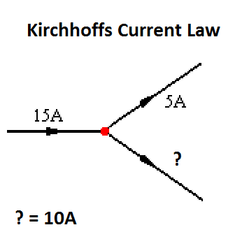

Total current going into a circuit board junction must equal the total current leaving the junction.

Fix this page or the connected image by cloning the repository at
https://github.com/hpssjellis/crowd-curriculum-robotics/blob/master/robotics/kirchhoff.html
and making a pull request (PR) to it.
In your pull request, comment area, send a link to your version web page version of my repository. Your URL will look something like: